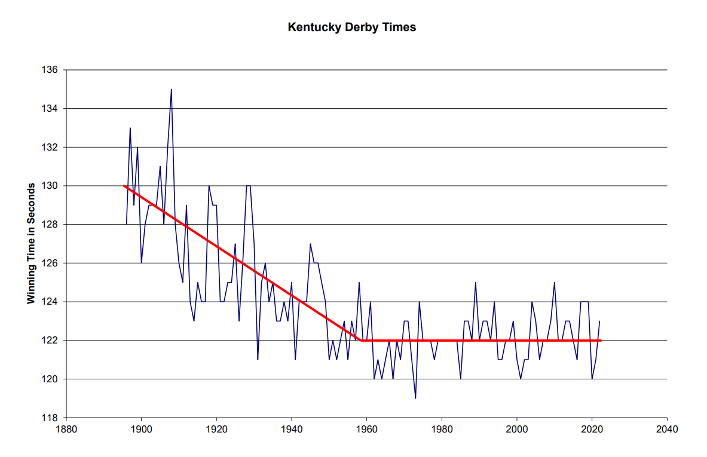

| Feature Article - November 2014 |
| by Do-While Jones |
Why is it nonsense when WE say it, but reasonable when THEY say it?
Recently a professor published a one-paragraph letter in the respected, peer-reviewed journal Science that was so similar to one of our essays that one might suspect plagiarism. It certainly wasn't plagiarism. Great minds simply think alike, and make similar observations about the world around them. When we wrote to the professor to tell him we had said basically the same thing in June of 1999, his only response was,
|
I've rarely read such nonsense and lack of understanding of the evolutionary process. |
Why is it "nonsense" and "lack of understanding" when we say it, but worthy of publication in Science when he says it? In a word--"prejudice."
Academic prejudice hinders the advancement of science because prejudice causes scientific journals to ignore and/or reject discoveries.
For example, When Guy Berthault tried to publish his work showing how many laminations of sedimentary rock can form quickly (rather than a year at a time), the scholarly journals refused to publish it. So, he had to publish his results in creationist magazines. Ten years later, Nature published a virtually identical paper, without giving credit to Berthault. 1 Mary Schweitzer had to publish her discovery of soft tissues in dinosaur bones outside of the mainstream scientific literature until Jack Horner finally endorsed it. 2
In our case, the research concerns the breeding of race horses. Here's how it all went down.
In the June 13, 2014, issue of Science (shortly after California Chrome won the Kentucky Derby), Ann Gibbons wrote an article in which she expressed concern about how inbred race horses have become. 3 There wasn't anything very remarkable about her article, but it sparked a response from Dr. R. Michael Roberts (who works in the Division of Animal Sciences and Bond Life Sciences Center at the University of Missouri) in which he concluded,
|
... it is clear that breeding for speed under the present arcane strategies used by the thoroughbred industry is simply not working, even as the gene pool narrows. 4 |
Although we did not call breeding an "arcane strategy," we came to the same conclusion in our June, 1999, article, "The Kentucky Derby Limit." 5 What's the difference?
He said,
|
However, the inference that today's select thoroughbreds (despite having "larger muscles balanced on slimmer legs and smaller hooves") run faster than their predecessors is simply wrong. A perusal of Kentucky Derby winning times between 1950 and 2012 indicates no significant increase in speed over those 62 years. 6 |
Our plot of winning times from 1896 up to 2014 shows the same thing.

We agree with his comment about track conditions.
|
Some of the variability, especially the slower times, is undoubtedly related to the condition of the track, but even the record time, established by Secretariat in 1973, is within 3 seconds of the mean. 7 |
It is also coincidental that he compared the breeding of horses to the breeding of cows, just as we did.
|
Over a comparable period, milk production among U.S. dairy cows--also the targets of breeding--has increased more than threefold. I do not claim that thoroughbreds put in the hands of dairy farmers would be running sub-1-minute miles in 2014, but it is clear that breeding for speed under the present arcane strategies used by the thoroughbred industry is simply not working, even as the gene pool narrows. 8 |
If there is any difference at all between the "nonsense" we wrote, and what he wrote, it might be here. He seems to be saying dairy farmers do a better job of selective breeding than horse breeders do (but he doesn't say how).
We must admit that we aren't exactly sure what the point of his one-paragraph letter to Science is. Perhaps he wrote more, but the editors condensed his letter causing his point to be lost. Perhaps he thought the point was so obvious he didn't need to express it explicitly. With that disclaimer, here's what we think his point is:
Thoroughbred racehorses have become so inbred that they are almost identical genetically. Since they are genetically identical, they will be physically identical. The only way to get horses to run faster is to get some "new blood" into the gene pool.
Of course, he is right about that (if that really is his point). That certainly is our point. Evolution requires the addition of new genetic material. As long as the gene pool stays the same, the creatures coming out of that pool will stay the same. The only way for horses to improve is for new genetic information to be added to their genes.
With today's technology, it might be possible for a gene jockey to replace sections of horse DNA with genes taken from a cheetah or greyhound, which might make them run faster. Some people might consider that unethical (for sporting, rather than religious, reasons).
A more traditional approach would be to let California Chrome have his way with a Clydesdale mare to produce a faster colt. But Kentucky Derby breeders don't invest in mixed-breed racehorses for one of two reasons. Either (1) they know from experience that it is a stupid idea that won't work, or (2) they are too narrow-minded to try. We suspect it is the former; but Roberts might think it is the latter.
The Modern Synthesis (currently the most widely believed version of the theory of evolution) says that new information comes from random mutations. If that were true, then new mutations would continue to arise spontaneously, making thoroughbred racehorses faster and faster every year. But the Modern Synthesis isn't true, which is why horses have reached the Kentucky Derby Limit.
Breeders could help the evolutionary process along by focusing strong x-rays on California Chrome's testicles, increasing the number of mutant offspring, just like some scientists have done on fruit flies. Of course, they aren't going to do that. Horses don't reproduce as rapidly as fruit flies, so there isn't time to wait for a successful mutation. Furthermore, countless mutant fruit flies produced this way have not exhibited any remarkable improvements in fruit flies, so there is no reason to believe that they could produce a faster racehorse no matter how long they tried.
Breeding horses is more expensive than breeding fruit flies. It takes more faith to believe with your pocketbook than it does to believe with your mind. Breeders don't intentionally randomly mutate the genes of their fastest horses because they don't really believe in the Modern Synthesis (that is, evolution).
The undeniable evidence is that there really is a limit to how much the characteristics of a particular species can vary. Racehorses have reached the limit of how fast they can run.
More to the point, that limit prevents fish from evolving into amphibians, or reptiles evolving into birds or mammals. Yes, evolution can produce minor changes that may become established in a population, but no, evolution cannot proceed without limit to create new kinds of creatures.
| Quick links to | |
|---|---|
| Science Against Evolution Home Page |
Back issues of Disclosure (our newsletter) |
| Web Site of the Month |
Topical Index |
Footnotes:
1
Disclosure, October 2000, "Grand Canyon Breakthrough", http://scienceagainstevolution.info/v5i1n.htm
2
Disclosure, September, 2008, "Sliming Soft Tissue", http://www.scienceagainstevolution.info/v12i12f.htm
3
Ann Gibbons, Science, 13 June 2014, "Racing for disaster?", pp. 1213-1214, http://www.sciencemag.org/content/344/6189/1213.full
4
R. Michael Roberts, Science, 8 August 2014, "Breeding for speed", p. 632, http://www.sciencemag.org/content/345/6197/632.1.full?sid=7a58d295-6ff5-4b65-b910-73001e03331a
5
Disclosure, June 1999, "The Kentucky Derby Limit", http://scienceagainstevolution.info/v3i9f.htm
6
R. Michael Roberts, Science, 8 August 2014, "Breeding for speed", p. 632, http://www.sciencemag.org/content/345/6197/632.1.full?sid=7a58d295-6ff5-4b65-b910-73001e03331a
7
ibid.
8
ibid.